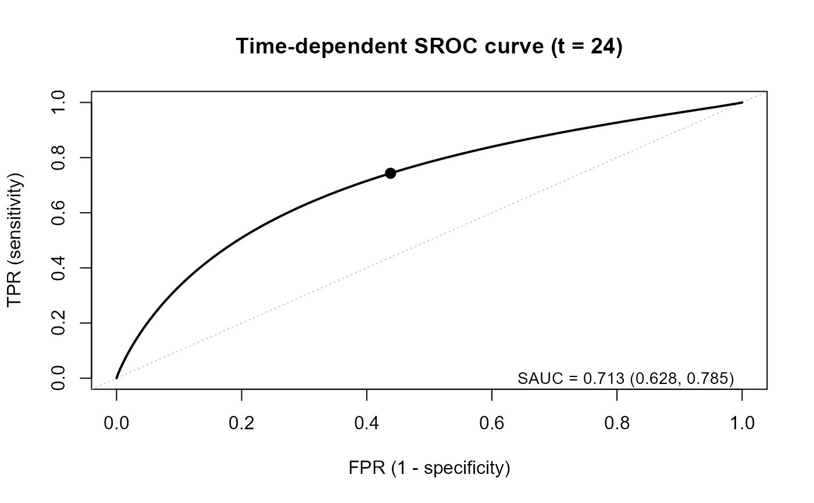
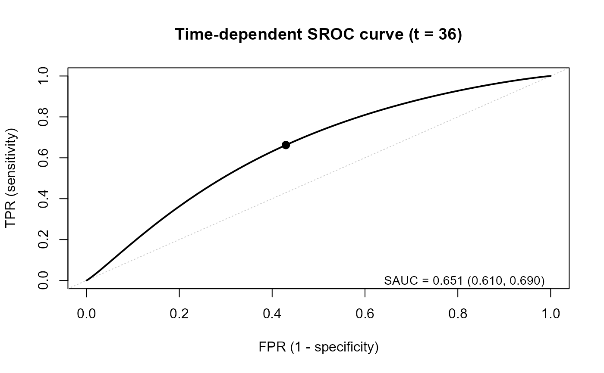
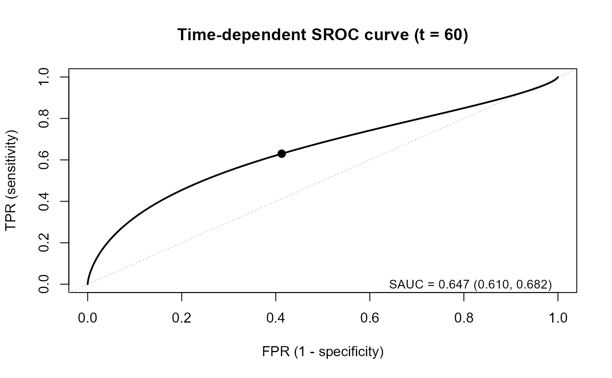
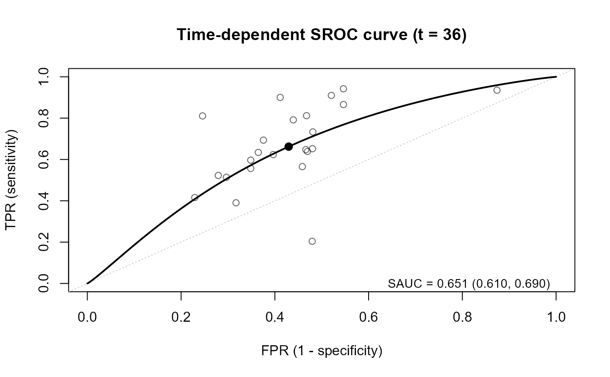
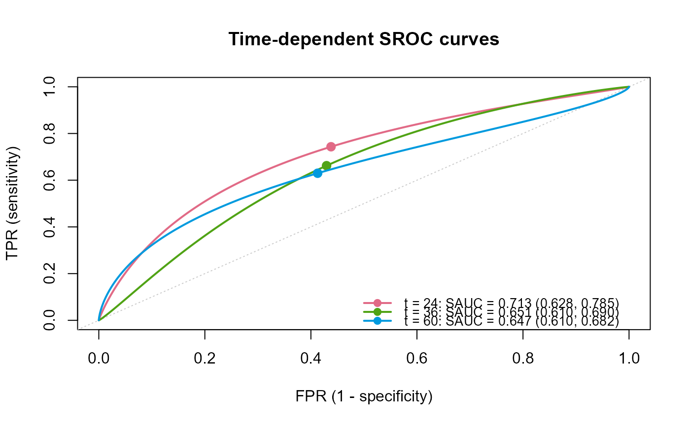

Bivariate random-effects model (Hattori's model) estimating the time-dependent SROC curve without publication bias
Source:R/hattori.tsroc.R
hattori.tsroc.RdThis function estimates the time-dependent SROC curve and SAUC in meta-analysis of prognostic studies, without considering publication bias. At each time point, the time-dependent sensitivity and specificity are reconstructed from the published survival probabilities of the test-positive and test-negative groups, and the bivariate random-effects model of the logit-transformed sensitivity and specificity (with the within-study covariance) is fitted by the maximum likelihood method.
Usage
hattori.tsroc(
time.points,
study.os,
time.os,
n1.os,
n0.os,
s1.os,
s0.os,
data.os = NULL,
study.lnhr,
lnhr,
var.lnHR,
data.lnhr = NULL,
time.med,
n1.med,
n0.med,
s1.med,
s0.med,
data.mt = NULL,
ci.level = 0.95,
parallel.ncores = 1L,
parset = list()
)Arguments
- time.points
A numeric vector of the time points at which the time-dependent SROC curve is estimated. Each value should be included in
time.os.- study.os
Specify the column of the study ID (numeric) in
data.os.- time.os
Specify the column of the time at which the survival probabilities are reported. The unit of time should be the same as
time.pointsandtime.med.- n1.os
Specify the column of the number of subjects in the test-positive group (group 1).
- n0.os
Specify the column of the number of subjects in the test-negative group (group 0).
- s1.os
Specify the column of the survival probability at
time.osin group 1.- s0.os
Specify the column of the survival probability at
time.osin group 0.- data.os
A data frame of the survival data, with one row for each study and each time point. Within each study, the rows should be sorted in ascending order of time. If
data.os = NULL(default),study.os,time.os,n1.os,n0.os,s1.os, ands0.osare evaluated in the calling environment.- study.lnhr
Specify the column of the study ID (numeric) in
data.lnhr, which corresponds tostudy.os.- lnhr
Specify the column of lnHR (group 1 versus group 0).
- var.lnHR
Specify the column of the variance of lnHR.
- data.lnhr
A data frame of lnHR, with one row for each study. If
data.lnhr = NULL(default),study.lnhr,lnhr, andvar.lnHRare evaluated in the calling environment.- time.med
Specify the column of the median follow-up time.
- n1.med
Specify the column of the number of subjects in group 1.
- n0.med
Specify the column of the number of subjects in group 0.
- s1.med
Specify the column of the survival probability at
time.medin group 1.- s0.med
Specify the column of the survival probability at
time.medin group 0.- data.mt
A data frame of the median follow-up time, with one row for each study reporting it. It is used to estimate the censoring distribution common to all the studies (see details in
tsrocsa.lrt). Ifdata.mt = NULL(default),time.med,n1.med,n0.med,s1.med, ands0.medare evaluated in the calling environment.- ci.level
The confidence level of the confidence intervals, within (0, 1). The default is 0.95.
- parallel.ncores
The number of cores used for the parallel computation over
time.points(PSOCK cluster of the package parallel). The default is1L(no parallel computation).- parset
A list of the settings for the estimation, which updates the default settings. Bad initial values and bounds may cause non-convergence.
inital.values: The initial values ofc(mu1, mu2, tau1, tau2, rho). If it is not a vector of length 5 (default), the estimates bymixmetaare used.mu.bound: \(\mu_1\) and \(\mu_2\) are searched within[-mu.bound, mu.bound]. The default is 5.tau.bound: \(\tau_1\) and \(\tau_2\) are searched within[eps, tau.bound]. The default is 5.eps: The lower bound of \(\tau_1\) and \(\tau_2\). The default is1e-5.
Value
An object of class "sroc":
a list with one element for each time point (named "t = xx").
Each element is the same as the output of reitsma.sroc
(its data element also contains the within-study covariance v12),
or an object of class "try-error" if the estimation failed at that time point.
The attributes "call", "ci.level", and "n.study" (the number of studies
at each time point) are used by the methods.
The results can be shown by print.sroc, summary.sroc, and plot.sroc.
Details
The time-dependent sensitivity and specificity, and their within-study variances and covariance
are calculated in the same way as tsrocsa.lrt.
study.lnhr, lnhr, and var.lnHR are required as input,
but lnHR is not used in the estimation of this function.
References
Hattori, S., & Zhou, X.-H. (2016). Time-dependent summary receiver operating characteristics for meta-analysis of prognostic studies. Statistics in Medicine, 35(26), 4746–4763. doi:10.1002/sim.7029
Examples
## load data
data(Ki67)
head(Ki67$OS)
#> author study t n1 n0 s1 s0
#> 1 bevilacqua 1 6 94 13 1.00 0.990
#> 2 bevilacqua 1 12 94 13 1.00 0.970
#> 3 bevilacqua 1 18 94 13 1.00 0.970
#> 4 bevilacqua 1 24 94 13 0.97 0.965
#> 5 bevilacqua 1 30 94 13 0.92 0.965
#> 6 bevilacqua 1 36 94 13 0.92 0.960
head(Ki67$HR)
#> author study HR ci.low ci.up
#> 1 bevilacqua 1 2.75 1.02 7.39
#> 2 caly 4 1.95 0.92 4.14
#> 3 domagala_no- 5 3.04 1.03 8.99
#> 4 domagala_no+ 6 1.38 0.66 2.86
#> 5 erdern 7 17.23 2.42 122.36
#> 6 fresno 8 1.81 0.71 4.59
head(Ki67$MT)
#> author study n1 n0 mct_mo s1_mct s0_mct
#> 1 bevilacqua 1 94 13 74.0 0.79 0.84
#> 2 erdern 7 13 34 72.5 0.60 0.97
#> 3 fresno 8 84 62 75.0 0.75 0.90
#> 4 goodson 11 56 56 61.2 0.75 0.90
#> 5 jansen 15 153 168 128.0 0.43 0.60
#> 6 jensen 16 54 64 104.0 0.68 0.90
## Define datasets of the HR
Ki67_OS <- Ki67$OS
Ki67_HR <- Ki67$HR
Ki67_MT <- Ki67$MT
## lnHR and its variance from HR and its 95 percent CI
Ki67_HR$lnHR <- log(Ki67_HR$HR)
Ki67_HR$lnHR.var <- ((log(Ki67_HR$ci.up) - log(Ki67_HR$ci.low)) / (2 * qnorm(0.975)))^2
fit <- hattori.tsroc(
time.points = c(24, 36, 60),
study.os = study,
time.os = t, n1.os = n1, n0.os = n0,
s1.os = s1, s0.os = s0,
data.os = Ki67_OS,
study.lnhr = study, lnhr = lnHR, var.lnHR = lnHR.var,
data.lnhr = Ki67_HR,
time.med = mct_mo, n1.med = n1, n0.med = n0,
s1.med = s1_mct, s0.med = s0_mct,
data.mt = Ki67_MT
)
## main results: one row for each time point
fit
#> Time-dependent SROC curve: bivariate random-effects model at each time point
#> (Hattori and Zhou, 2016); publication bias is not considered
#>
#> K Conv SAUC 95% CI Sens 95% CI Spec 95% CI
#> t = 24 23 yes 0.713 [0.628, 0.785] 0.743 [0.647, 0.821] 0.562 [0.506, 0.617]
#> t = 36 23 yes 0.651 [0.610, 0.690] 0.662 [0.577, 0.738] 0.570 [0.515, 0.624]
#> t = 60 21 yes 0.647 [0.610, 0.682] 0.630 [0.567, 0.688] 0.587 [0.522, 0.649]
#>
#> Estimates (tau1, tau2: between-study SDs; rho: correlation):
#> mu1 mu2 tau1 tau2 rho
#> t = 24 1.063 0.249 0.911 0.520 -0.515
#> t = 36 0.673 0.284 0.656 0.512 -0.877
#> t = 60 0.532 0.353 0.430 0.577 -0.928
## estimates with SEs and confidence intervals at each time point
print(fit)
#> Time-dependent SROC curve: bivariate random-effects model at each time point
#> (Hattori and Zhou, 2016); publication bias is not considered
#>
#> K Conv SAUC 95% CI Sens 95% CI Spec 95% CI
#> t = 24 23 yes 0.713 [0.628, 0.785] 0.743 [0.647, 0.821] 0.562 [0.506, 0.617]
#> t = 36 23 yes 0.651 [0.610, 0.690] 0.662 [0.577, 0.738] 0.570 [0.515, 0.624]
#> t = 60 21 yes 0.647 [0.610, 0.682] 0.630 [0.567, 0.688] 0.587 [0.522, 0.649]
#>
#> Estimates (tau1, tau2: between-study SDs; rho: correlation):
#> mu1 mu2 tau1 tau2 rho
#> t = 24 1.063 0.249 0.911 0.520 -0.515
#> t = 36 0.673 0.284 0.656 0.512 -0.877
#> t = 60 0.532 0.353 0.430 0.577 -0.928
summary(fit)
#> Time-dependent SROC curve: bivariate random-effects model at each time point
#> (Hattori and Zhou, 2016); publication bias is not considered
#>
#> Call:
#> hattori.tsroc(time.points = c(24, 36, 60), study.os = study,
#> time.os = t, n1.os = n1, n0.os = n0, s1.os = s1, s0.os = s0,
#> data.os = Ki67_OS, study.lnhr = study, lnhr = lnHR, var.lnHR = lnHR.var,
#> data.lnhr = Ki67_HR, time.med = mct_mo, n1.med = n1, n0.med = n0,
#> s1.med = s1_mct, s0.med = s0_mct, data.mt = Ki67_MT)
#>
#> ============================================================
#> t = 24
#> ============================================================
#> Number of studies: 23
#> Convergence: yes (relative convergence (4))
#> Log-likelihood: -10.651
#>
#> Parameters (tau1, tau2: between-study SDs; rho: correlation)
#> ------------------------------------------------------------
#> Estimate SE 95% CI
#> mu1 1.063 0.234 [0.604, 1.522]
#> mu2 0.249 0.116 [0.023, 0.476]
#> tau1 0.911 0.198 [0.595, 1.395]
#> tau2 0.520 0.096 [0.362, 0.746]
#> rho -0.515 0.259 [-0.852, 0.122]
#>
#> Summary measures
#> ------------------------------------------------------------
#> Estimate 95% CI
#> Sensitivity 0.743 [0.647, 0.821]
#> Specificity 0.562 [0.506, 0.617]
#> SAUC 0.713 [0.628, 0.785]
#>
#> All estimates (par.all)
#> ------------------------------------------------------------
#> mu1 mu2 tau1^2 tau2^2 tau12 sauc sens spec
#> 1.063 0.249 0.830 0.270 -0.244 0.713 0.743 0.562
#>
#> ============================================================
#> t = 36
#> ============================================================
#> Number of studies: 23
#> Convergence: yes (relative convergence (4))
#> Log-likelihood: -4.470
#>
#> Parameters (tau1, tau2: between-study SDs; rho: correlation)
#> ------------------------------------------------------------
#> Estimate SE 95% CI
#> mu1 0.673 0.185 [0.310, 1.036]
#> mu2 0.284 0.115 [0.059, 0.509]
#> tau1 0.656 0.209 [0.351, 1.224]
#> tau2 0.512 0.095 [0.356, 0.737]
#> rho -0.877 0.161 [-0.992, 0.005]
#>
#> Summary measures
#> ------------------------------------------------------------
#> Estimate 95% CI
#> Sensitivity 0.662 [0.577, 0.738]
#> Specificity 0.570 [0.515, 0.624]
#> SAUC 0.651 [0.610, 0.690]
#>
#> All estimates (par.all)
#> ------------------------------------------------------------
#> mu1 mu2 tau1^2 tau2^2 tau12 sauc sens spec
#> 0.673 0.284 0.430 0.262 -0.295 0.651 0.662 0.570
#>
#> ============================================================
#> t = 60
#> ============================================================
#> Number of studies: 21
#> Convergence: yes (relative convergence (4))
#> Log-likelihood: 3.044
#>
#> Parameters (tau1, tau2: between-study SDs; rho: correlation)
#> ------------------------------------------------------------
#> Estimate SE 95% CI
#> mu1 0.532 0.133 [0.271, 0.792]
#> mu2 0.353 0.135 [0.089, 0.617]
#> tau1 0.430 0.153 [0.215, 0.862]
#> tau2 0.577 0.110 [0.397, 0.837]
#> rho -0.928 0.124 [-0.998, 0.109]
#>
#> Summary measures
#> ------------------------------------------------------------
#> Estimate 95% CI
#> Sensitivity 0.630 [0.567, 0.688]
#> Specificity 0.587 [0.522, 0.649]
#> SAUC 0.647 [0.610, 0.682]
#>
#> All estimates (par.all)
#> ------------------------------------------------------------
#> mu1 mu2 tau1^2 tau2^2 tau12 sauc sens spec
#> 0.532 0.353 0.185 0.333 -0.230 0.647 0.630 0.587
#>
## plots
plot(fit, ask = FALSE) # all time points, one per page, no prompt



plot(fit, time = 36, add.study = TRUE) # one time point with the studies

plot(fit, overlay = TRUE) # all time points in one panel

# \donttest{
## interactive: press <Return> to move to the next time point
if (interactive()) plot(fit, add.study = TRUE, study.size = "precision")
# }